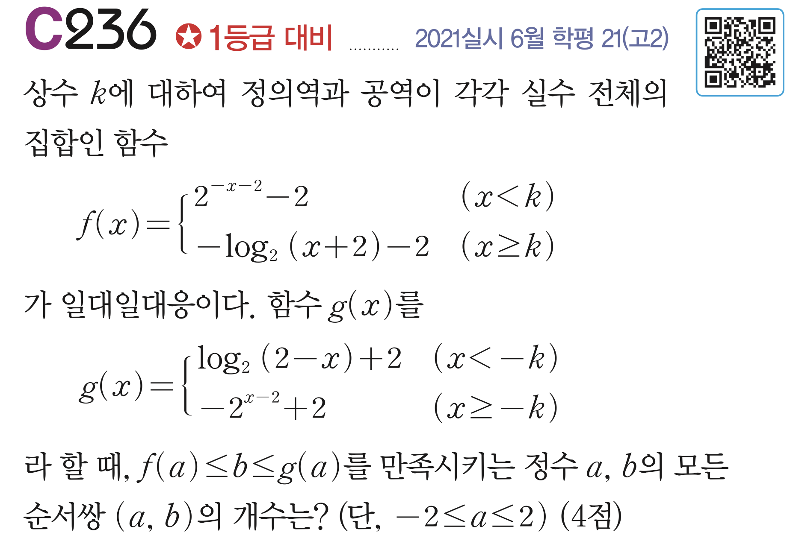

교점 → Lambert \(W\) → 무한지수탑
\(y=a^x\)와 \(x=a^y\)의 교점은 어떤 양상을 보이는가?

\(y=x\) 위 교점 vs. \(y=x\) 밖 교점
| \(a\) 의 범위 | \(-\ln a\) (\(=\eta\)) | 교점 수 | 구조 |
|---|---|---|---|
| \(1 < a < e^{1/e}\) | \(-1/e < \eta < 0\) | 2 | \(y=x\) 위 2개 |
| \(a = e^{1/e}\) | \(\eta = -1/e\) | 1 | \(y=x\) 위 접점 |
| \(a > e^{1/e}\) | \(\eta < -1/e\) | 0 | 교점 없음 |
| \(a\) 의 범위 | \(\eta = -\ln a\) | 교점 수 | 구조 |
|---|---|---|---|
| \(0 < a < e^{-e}\) | \(\eta > e\) | 3 | \(y=x\) 위 1개 + 대칭쌍 2개 |
| \(e^{-e} \leq a < 1\) | \(0 < \eta \leq e\) | 1 | \(y=x\) 위 1개 |
\(w \mapsto we^w\) 의 역함수
| \(a\) 의 범위 | \(\eta = -\ln a\) | 교점 수 |
|---|---|---|
| \(0 < a < e^{-e}\) | \(\eta > e\) | 3 |
| \(e^{-e} \leq a < 1\) | \(0 < \eta \leq e\) | 1 |
| \(a = 1\) | \(\eta = 0\) | 1 |
| \(1 < a < e^{1/e}\) | \(-1/e < \eta < 0\) | 2 |
| \(a = e^{1/e}\) | \(\eta = -1/e\) | 1 |
| \(a > e^{1/e}\) | \(\eta < -1/e\) | 0 |
\(y = f(x)\) 와 \(y = f^{-1}(x)\) 의 교점
평행이동 제거 → Lambert \(W\) 형 변형
| \(\eta\) 범위 | 교점 수 | 비고 |
|---|---|---|
| \(-1/e < \eta < 0\) | 2 | \(W_0, W_{-1}\) 두 가지 |
| \(\eta = -1/e\) | 1 | 접점 |
| \(\eta < -1/e\) | 0 | 교점 없음 |
| \(\eta\) 범위 | 교점 수 | 구조 |
|---|---|---|
| \(0 < \eta \leq e\) | 1 | \(y=x\) 위 고정점 |
| \(\eta > e\) | 3 | \(y=x\) 위 1 + 밖 2주기쌍 |
\(\sqrt{2}\) 는 수렴, \(\sqrt{3}\) 은 발산
같은 방정식, 세 가지 시점
고정점 방정식 \(x = a^x\) 의 세 가지 해석
| 주제 | 핵심 경계 | Lambert \(W\) 역할 |
|---|---|---|
| 교점 개수 (원래 문제) | \(e^{-e}\) 와 \(e^{1/e}\) | \(y=x\) 위의 해 \(x_* = -W(-\ln a)/\ln a\) |
| 교점 개수 (일반화) | \(\eta = e\) (감소형), \(\eta = -1/e\) (증가형) | \(x_* = b - W_j(\eta)/\ln a\) |
| 무한 지수탑 | \(e^{-e} \leq a \leq e^{1/e}\) | 극한값 \(T = -W(-\ln a)/\ln a\) |